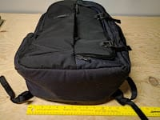
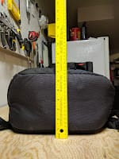
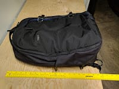

Motto: HELLO RANDOM PERSON GOOGLING FOR REVIEWS! I wrote this for you!
Backstory:
I obsessed about backpacks for a few months. I was in a loop where I researched, made lists, Googled, read reviews, watched reviews, went to stores, then started the process all over again in search of the “perfect” bag to buy. I spent a lot of time on Reddit’s /r/onebag, /r/backpacks, and /r/EDC. I found the website Carryology and YouTubers Chase Reeves and Bo Ismono. It started (over a year ago, actually) with the GORUCK GR1 - but a few months back expanded to other GORUCKs, the Evergoods CPL24, the Tom Bihn Synapse 25, REI’s Rucksacks, and various other bags that you can only pre-order from Kickstarter. About two months ago I stumbled across the Timbuk2 “Never Check Expandable Backpack”. Being a long-time Timbuk2 owner and proud writer of the top, most helpful review on Amazon’s page for the Timbuk2 Command Messenger bag, finding this bag felt like a sign. The Never Check Expandable Backpack is a fairly new product, from what I can tell. It had literally no reviews on the internet outside of two on Timbuk2’s own website - both of which were glowingly positive & neither of which I trusted - and Timbuk2’s 30 second promotional video, which was only partially helpful.
Anyway it was on sale, so I picked it up a month ago.
Thus begins my review:
The Timbuk2 Never Check Expandable backpack is simple, but not too simple, well-made, but not crazy-well-made backpack with a terrible name and a good combination of features.
{kind=link}
{kind=link}
{kind=link}
{kind=link}
It looks unassuming. Its overall shape is reminiscent of a GORUCK*, and looks a lot like a Evergoods CPL24* had a baby with a Timbuk2 Command Messenger bag. It’s available in exactly one color combination - black with blue interiors.
*I have never owned either of these nor really had experience with them IRL.
Let’s start with a lot of FACTUAL INFORMATION:
Their site says it’s 12 x 19.5 x 6 inches. My measurements pretty much agree with that.
  
{kind=link}
{kind=link}
{kind=link}
The bag has 5 separate storage areas:
- Main compartment - the big one
- The front compartment - the smaller one that’s got the hooks helping keep it closed
- The laptop compartment - between your back and the main compartment
- The Napoleon pocket - small zippered pocket sitting in front of the front compartment
- Water bottle holder - expands off to the side
The front, laptop, and Napoleon pockets were all designed to be side-entry. Backpacks of this design meant to be easily accessed while standing. In this case, you take your left arm out of the backpack, swing it under your right shoulder in front of you, hold it with your left hand and use your right to unzip & access the Napoleon, front, or laptop compartments.
{kind=link}
Each of these pockets is done in a way that doesn’t make everything in them fall down on top of itself (which was a criticism of the Evergoods CPL24). The front organizer has a four vertically-oriented slip pockets, each running half the width of the bag (they do not extend down past the visible opening) and a zippered pocket running the entire width of the bag (does extend all the way down).
{kind=link}
{kind=link}
The Napoleon pocket does not run the entire length of the face of the bag, but instead sits in the middle third - making it sized slightly bigger than a pocket in your jeans (or, if you wear girl jeans, it’s way bigger).
{kind=link}
The laptop compartment near your back is padded, but not suspended. It’s also not overly large, in my opinion. I’m writing this on a Samsung Chromebook Plus (which I also highly recommend, by the way), which isn’t a big computer. I was able to fit it and a spiral notebook in without much trouble, but carrying my wife’s Macbook Air in with them was a pretty snug fit.
{kind=link}
The main compartment would be clamshell-style if it weren’t for some gusseted pieces of fabric that limit how far open the bag gets.
{kind=link}
In that main compartment is a thin separator along the back wall (for notebooks or whatever), whereas the front wall houses a zippered mesh pocket on top and smallish, suspended pocket just below that which is about half the width of the bag.
{kind=link}
{kind=link}
The main compartment is the only one that’s affect by the “expandable” nature of the backpack. The expandability does NOT affect the bottom wall of the bag. Instead it lets the bag go from tapered from top to bottom to being essentially more flat (if not tapered the other direction).
{kind=link}
{kind=link}
Lastly, there’s the water bottle holder. It zips away and folds flat when not in use. Unzips to an elastic mesh that allows you to comfortably hold a Hydroflask (20/24 oz), or a 20 oz bottle. You can actually force a Nalgene bottle down in there, but it doesn’t feel like it was mean to stretch that much.
{kind=link}
{kind=link}
Unlike the CPL24 or any GORUCK, this bag has no morale patches, nor Molle attachment points. There is, however, a few good places for carabiners to attach around the handles on the top and side.
For reference, that green notebook you see in a few of those shots is 8 by 6 inches. It’s also awesome and no notebook can ever replace it.
{kind=link}
Now that we’ve got the facts out of the way, let’s talk about OPINIONS AND NOTES ABOUT MY EXPERIENCE!
The pragmatically-named Never Check Expandable backpack is not a purchase I regret, but like most other things, it’s not perfect. There are a lot of things to like about this bag, and a few design choices that not everyone will like.
Thus far I’ve used it as my sole travel bag for 3 overnight car trips, the longest of which was 3 days. It’s also accompanied me to a couple of coffee shops, a farmer’s market, and I took to just start storing my laptop and charger in there when I’m around the house. It’s functioned very well for all of those tasks. Here’s an example loadout (what I took to go to my in-laws for a couple days):
{kind=link}
All that fits in there with plenty of room to spare.
{kind=link}
The good stuff:
- I really like the way it looks. It’s clean and simple without being overly plain. It really nails the balance I was looking for between being “minimalist” and “fun”.
- The bag stands up by itself really consistently without the need for any sort of internal frame. Makes sitting it down and picking it up really easy. Makes it look not out of place when you sit it next to a chair.
- It holds more than any Timbuk2 I’ve owned thus far - enough to take a 3 day trip with some room to spare. I look forward to my first real “one bag” travel test with it - maybe get an excuse to actually use the expandable feature.
- Again comparing to the (four) Timbuk2 messenger bags I’ve had experience with, it’s by far and away more comfortable to carry for extended periods. I was all about messenger bags for years. I thought they looked great and professional and all sorts of stuff, but really backpacks are more comfortable for carrying anything remotely heavy. Wearing this backpack with only the essentials in it feels like I’d never possibly get tired of wearing it. Also the side entry design actually makes this backpack easier to use while standing than my messengers.
- The handles on the top and side feel good. They’re low-profile without being completely flat to the bag. They’re usable but manage to blend in. They balance the weight of the bag well and feel good to use.
- The organization works really well with my packing style - or, should I say, I didn’t have to change my packing preferences to accommodate the bag.
- The water bottle holder works very well for my 24 oz Hydroflask.
- The blue interior makes finding stuff in the bag easy. Also it gives it a fun and unique look as compared to some of the other bags I was looking at.
- The straps have thumb holds that make them easy to adjust up to tighten the bag to your back. This is more handy than you’d think.
The “meh” stuff:
- The zippers are good, but not the best zippers I’ve ever used. They don’t get stuck, but don’t feel like they’re broken in yet. Timbuk2 aired on the side of caution here, as the zippers definitely just won’t fall open as you walk around. Also - if you’re not careful the zippers on the mesh pocket at the top of the main compartment can also get in the way of the zipper that closes the main compartment.
- The expandable portion of the bag doesn’t affect the bottom of the bag. This makes the “expansion” fairly limited. It’s not a feature I plan to use - but I like knowing it’s there if I need it. Also it tucks away and is very easy to forget about.
- The straps don’t feel indestructible. They don’t feel bad, either, but it seems like some expense was spared in the selection of the straps and manufacturing their attachment points. They’re fine, but probably not as good as most of the other bags I looked at.
- The chest buckle thing (never know what to call those) is fine. It’s adjustable to one of four discrete positions. It does the trick, but nothing else.
The bad stuff:
- The water bottle holder is only on one sit of the bag, and it’s the side on the bottom if you’re getting into any of the three compartments that open from the side. This means your water bottle is prone to fall out if you’re standing and getting into the front compartment, and you can’t sit the backpack on its side with a bottle in there.
- The hook closures on the front of the bag are only for aesthetics, and get in the way every single time you access the front compartment, which is probably my most-used area of the bag. Before I bought the bag, I thought you could use these to cinch the bag shut like compression straps, but that’s not their function. They’re there for looks, and looks alone. They do look nice and maintain the Timbuk2 brand, but at the cost of adding a step every single time you get into arguably the most helpful compartment in the bag? That’s questionable. I guess you could say they are there as a security feature, but they weren’t marketed as such.
Like I said. Overall, I like the bag and do not regret my purchase. I think each of the bags listed at the front of this Column comes with its own set of compromises, and the compromises for this bag are ones I’m willing to live with. The Never Check Expandable backpack is a well designed, well made bag with a dumb name. At the end of the day, I’m still a happy Timbuk2 customer.
THERE YOU GO INTERNET. NOW YOU HAVE ONE REVIEW.
Top 5: Parts of the Timbuk2 Never Check Expandable Backpack that Surprised Me
5. For some reason I expected it to be a bit bigger than it is. It’s as big as they advertised, but I guess I was just picturing those measurements to “feel” a hair bigger when translated to a real-life backpack.
4. Despite looking about the same size as my medium-sized Timbuk2 bags, it DOES actually hold significantly more… and is much more comfortable and less “bloated” looking in doing so.
3. It stands up by itself. I didn’t expect this. Moreover I didn’t expect to love and use this feature so much.
2. The expandability doesn’t go literally all the way around the bag, and thus
1. The loop closures do nothing other than look good and get in the way.
Quote:
“UGH NO REVIEWS OF THIS BAG EXIST ON THE INTERNET”
- me, before I bought it, which is I wrote this -